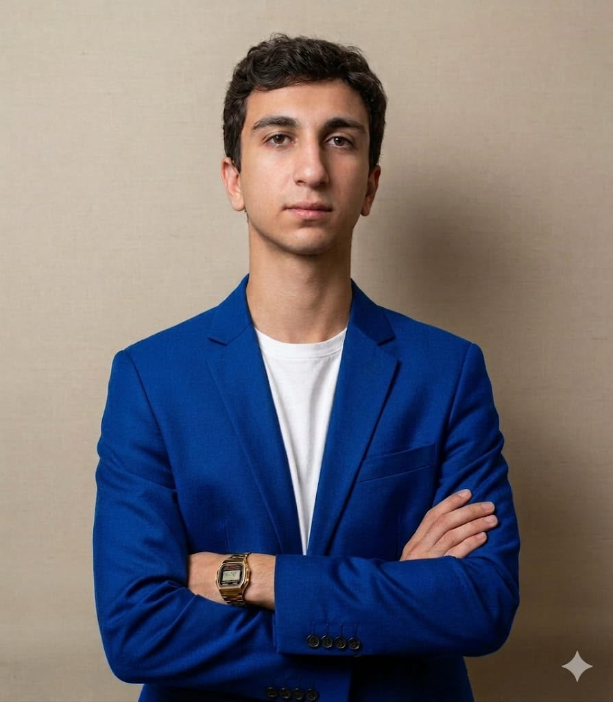

Quem somos
Somos dois programadores e analistas. Eu, Gustavo, trabalho com criação e análise de Softwares, e eu, Vitor, sou especialista em Visibilidade online e Estratégia de marketing e digital. Trabalhamos com criação de sistemas, análise de mercado e aprimoramento de marketing, tudo para aumentar a Visibilidade e Automatização do seu estabelecimento/ empresa.
“Firmados na rocha, impulsionando seu crescimento.”
Nossa história
Somos freelancers na área de tecnologia e unimos nossas habilidades para entregar um serviço completo: do site e do aplicativo até a estratégia para o seu negócio ser encontrado na internet. Aqui você fala direto com quem faz o trabalho.
A dupla
-

Gustavo Teixeira
Desenvolvimento de sites e aplicativos
Sou Gustavo Teixeira, faço faculdade de Análise e Desenvolvimento de Softwares e trabalho como programador front-end e um pouco de back-end criando sites e PWAs/APPs. Sempre fui muito envolvido com tecnologia e fui inspirado pelo meu tio a seguir nessa área. Meu foco era Hardware,criar mecanismos e robôs, porém eu comecei a me identificar com a área de engenharia, criação, análise de requisitos e Softwares. Minha meta é continuar trabalhando nessa área que cresce e sempre vai crescer no mercado, ajudando pessoas a entrar ainda mais nesse mundo novo e tecnológico.
-
Vitor Prates
Marketing e Visibilidade Online
Meu nome é Vitor Gabriel da Silva Prates. Desde cedo, carreguei o desejo de saber me comunicar bem, mostrar quem eu sou de verdade e crescer em cada projeto que assumo — algo que sempre fez parte dos conselhos que recebi do meu tio. Na Gravit Tech, é exatamente isso que eu coloco em prática: unir comunicação, marketing, publicidade e design para dar voz e forma ao que desenvolvemos, aproximando marcas das pessoas certas.
Nosso jeito de trabalhar
-
Atendimento direto
Você conversa com quem realmente faz o projeto, sem intermediários. Fazemos reuniões tanto presenciais como também online para saber o que você precisa. Realizamos o levantamento de requisitos, análise desses requisitos, documentação de tudo e diagramas para que seu projeto seja criado do seu jeito e da melhor forma.
-
Acessível para todos
Criamos pensando em todas as pessoas, incluindo quem usa leitor de tela ou teclado, quem possui dificuldade de enxergar e quem possui surdez.
-
Foco no seu objetivo
Cada decisão do projeto tem um motivo: ajudar o seu negócio a ser encontrado e a vender. Com o levantamento de requisitos, fazemos com que tudo saia de acordo com o seu desejo e a resolução do seu problema.